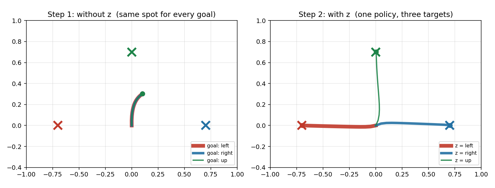

ノートPC1台、GPU不要・MuJoCo不要で読み進められる写経本3冊。ニューラルネットワークを作るところから始めて、同じ3つの的を題材に強化学習まで進みます。
ライブラリなし、numpy だけで層・順伝播・逆伝播・学習を書ききります。最後は自作のネットワークが3つの的を撃ち分けます。
02reach_env.py の各行を出発点に、観測・報酬・リターン・価値・終了条件を1つずつ埋めていきます。式の読み方も1節を割いて扱います。
1つの方策で3つの的を撃ち分ける。観測に目標ベクトル z を足すと解けるようになるところを、実際に学習を回して見ます。
01 → 02 → 03 の順を想定しています。01 でニューラルネットワークそのものを作り、02 で環境の書き方と用語を固め、03 で実際に強化学習を回します。
各冊は独立して読めます。動くものを先に見たい場合は 03 から読んでも構いません。

写経コードはすべて GitHub リポジトリ の RL/code/ にあります。
git clone https://github.com/katsuyuki-nakamura/physical-ai-study.git
cd physical-ai-study/RL
python3 -m venv .venv && source .venv/bin/activate
pip install -r requirements.txt
cd code && python nn1_neuron.py